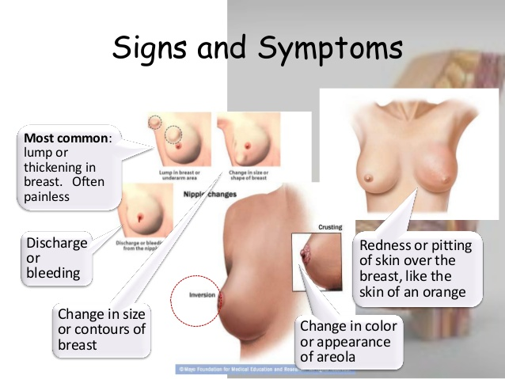

Stage 0 (noninvasive, carcinoma in situ) breast cancer: In stage 0, there is no evidence of cancer cells breaking out of the part of the breast in which they started, or of getting through to or invading neighboring normal tissue.
Stage I breast cancer: In stage I, the tumor measures up to two centimeters and no lymph nodes are involved.
Stage II (invasive) breast cancer: In stage II, the tumor measures between two to five centimeters, or the cancer has spread to the lymph nodes under the arm on the same side as the breast cancer.
Stage III (locally advanced) breast cancer: In stage III, the tumor in the breast is more than two inches in diameter across and the cancer is extensive in the underarm lymph nodes, or has spread to other lymph nodes or tissues near the breast.
Recurrent breast cancer: In recurrent breast cancer, the disease has returned in spite of the initial treatment.